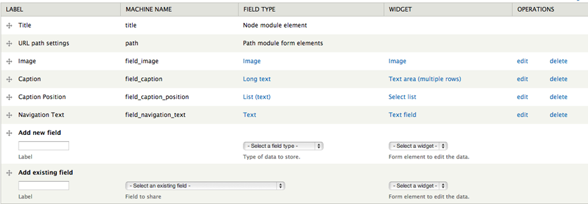
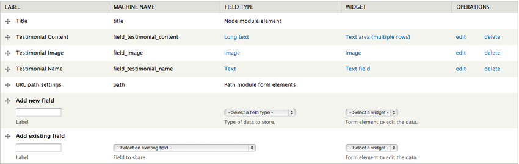

Contour is a unique, modern and multipurpose Drupal 7 theme perfect for creative single portfolios, agencies, studios and even eCommerce. For theme support that cannot be found in this documentation, please visit our support forum. Once you have registered please contact us via the ThemeForest author page with your forum username so you can be granted posting rights.
Updated: 06/25/13
Author: Refaktor
Docs powered by: TOC
Original design by Hasan Ali
There are several ways Contour can be installed. For existing sites that already have content, the first method will only involve the installation and activation of the theme. The second option includes a full Drupal 7 install with the same SQL database file used to create the theme demo. Please choose which installation method works best for you and follow the instructions. We do highly recommend you perform the full install, especially if you plan on using the Commerce functionality.
The following steps are designed for people that have experience manually installing Drupal and importing databases. If you do not feel comfortable performing these steps yourself, contact your server administrator for help. NOTE this option is for a completely new Drupal install. Do not import the provided SQL file into an existing Drupal database or you will lose all of your data!
Contour comes with a shell sub-theme called Contour_sub that you can use to make customizations to the style and template structure of the parent theme without having to modify the parent theme itself. This is useful if you plan on updating the parent theme as we release updates on ThemeForest. If you performed the full install you will already see Contour_sub in the list of themes available. If you did the standalone install you can find the Contour_sub.zip file in the root of the download files and you can install it like any other theme.
There is an empty stylesheet already defined which is /css/custom.css (inside the Contour_sub folder). Use this file to add all of the custom CSS that you plan on using. You can also copy any template file from the /Contour/templates folder into the /contour_sub/templates folder and it will listen to the sub-themes template file first. This will allow you to update the parent theme as we make updates without losing your customizations. Just pay attention to the changelog and compare the parent theme files with yours and make any adjustments as needed.
You will need to configure the sub-themes theme settings separately from the parent theme's, so visit /admin/appearance/settings/contour_sub to configure the theme settings for the sub-theme. You also need to configure the block regions separately.
Contour has a block region called Header Menu Left which can be used to add any menu block you like. The demo simply uses the default Main Menu block but you can create a custom menu block if you like.
You can find all of the modules used in the demo in the modules.zip archive in the root of the folder you downloaded from ThemeForest. Not all modules are required to use the theme, but below is a list of modules you will need to utilize various elements of the theme
If you used the "theme only" option to install the theme on an existing install that already has content we recommend you use our Contour Content Data module to create the additional content types, fields and Views needed to fully utilize the theme. You will find it in the root of the directory that contains the download files. This module is a custom Features module and will not run without it. We recommend copying all of the modules from the /drupal_7/sites/all/modules folder into your install if you do not already have them. After you have all the modules simply upload and activate the Contour Content Data module and the content types, fields and Views will automatically be created.
Contour utilizes several different custom content types that all have their own custom theme template files that are used to achieve various layouts and styles. If you are not working off of the full demo install please use the Contour Content Data plugin referenced above to automatically generate all these content types and their fields. We will also go over each of the content types as well as their fields and corresponding template files below:
This content type is used to manage the slides that are used in a Flexslider view block (like the one used on the front page of the demo).
Fields:
Template files:
This content type is used to manage the portfolio items used in the various Portfolio template styles Contour offers. All the styles are managed by this single content type and below is the list of fields and corresponding template files used by this content type:
Fields:
Template files:
This content type is used display Drupal Commerce products as node content.
Fields:
Template files:
This content type is used to create the testimonial items used in the Testimonials view block (like the one used on the front page of the demo).
Fields:
Template files:
Visit /admin/appearance/settings/contour to configure your theme's settings. You can select your color scheme, add your own custom CSS, add your own custom logo, etc.
If you would like to use Article (recommended) or Blog posts on your site Contour comes equipped with several templates that modify the look and feel of the posts list and single items. The default post page on the demo can be seen here, a single post can be seen here and an alternate list format can be seen here. There are no extra content types or custom fields that you need to set up and we will cover each template below:
The default page seen on the demo here is a View page of the Article content type. You can either use the Contour Content Data module to create the view or you can use the export code found in /views_exports/notes.txt. Visit /admin/structure/views/import and import the entire contents of that file and the View will be created for you. The following theme files are associated with this template:
The Note List is an alternative template for displaying a list of your posts and is also a View page of the Article content type. You can either use the Contour Content Data module to create the view or you can use the export code found in /views_exports/note_list.txt. Visit /admin/structure/views/import and import the entire contents of that file and the View will be created for you. The following theme files are associated with this template:
The Note Single is simply the layout of a single post of the Article or Blog content type on your site (we recommend using Article). The following theme files are associated with this template:
Contour features 17 block regions where you can add your own custom content. Visit yourdomain.com/admin/structure/block to add your own content to the defined block regions. Press "Add Block" to create a new custom blog, or select an existing block from the Disabled list below the defined block regions.
There are a variety of code examples in the /examples folder that correspond to various pages on the demo. You can use these as tools to replicate the visual appearance and functionality seen on the demo site.
The contact page on the demo site uses a Google Maps plugin (see /examples/contact.php). Below is the Javascript call that powers the map
var map;
$(document).ready(function(){
prettyPrint();
map = new GMaps({
div: '#map',
lat: 48.8584,
lng: 2.2946,
});
map.addMarker({
lat: 48.8584,
lng: 2.2946,
title: 'Contour Html Template',
click: function(e){
if(console.log)
console.log(e);
alert('You clicked in this marker');
}
});
});
//]]>
The map is then called with an empty div with the ID map. You can use a website like the following to get the latitude and longitude needed to use the Google Maps plugin.
Thank you very much for purchasing the Contour responsive Drupal 7 theme. Once again if you have any issues or feedback please connect via the ThemeForest author page. Enjoy using Contour!
© 2013 Refaktor.